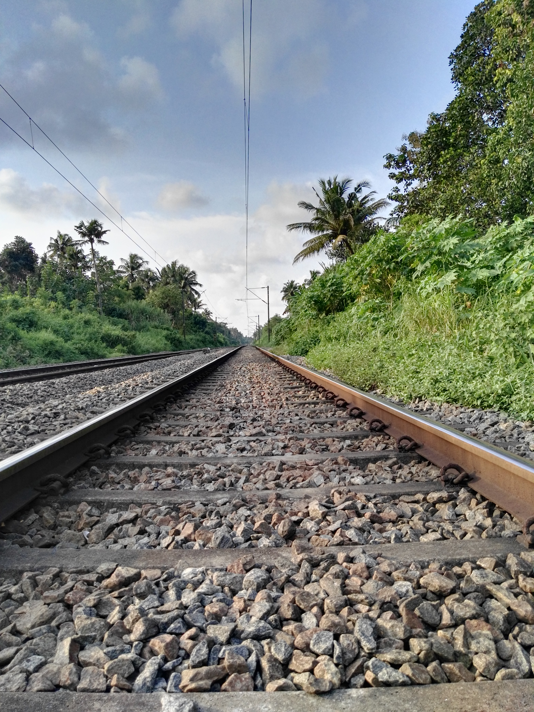
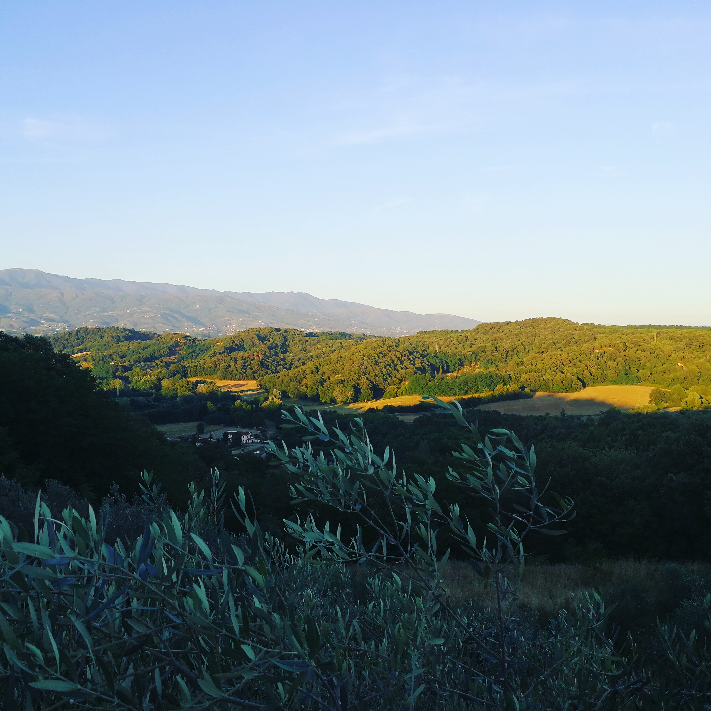
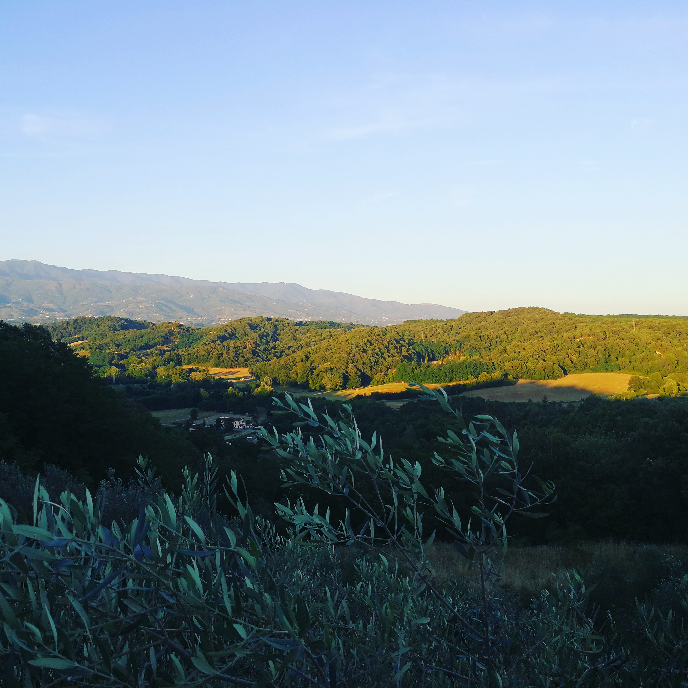
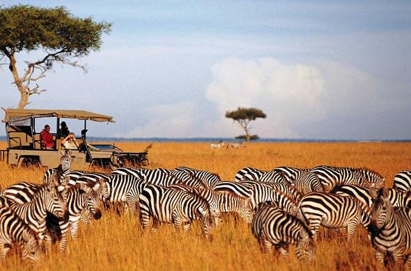

photograph
A photograph is an image created by light falling on photosensitive surface usually a photographic film or electronic image sensor. Photographs are created using a camera. learn more.
Some examples of photographs are:
-


 

photoghraphy
photography is the art,application and practice of creating durable images by recording light,either electronically by means of image sensor or chemically by means of a light sensitive material .learn more.
In the old days photos were used to be taken by painting your body and you slap yourself on a wall or some board that are definately of low quality. But due to technologies that have come,it is now easier to take photos without the struggle of paintings. Everyone can take a photo since it is now integrated into our smart phones. But having a camera on phone does not make you a perfect photographer sometimes we need to go through some training to get a well set photo of yourself or any other thing. There are schools that offer that training.An example is Africa Film and Television Talent Training Institute visit here. The camera that one uses also matter so a to produce a quality picture. Nowadays, people are making money out of this. The pictures can be sold to people,companies,museums e.t.c
An example of a picture that can be commercialy used are these:

- 
For more pictures click on ALBUM at the top.